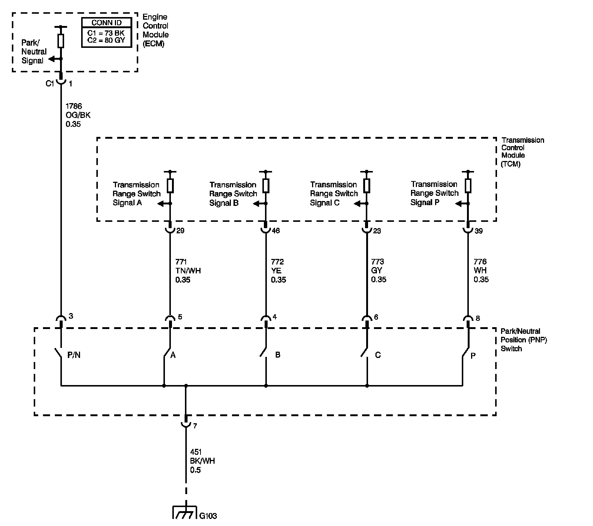

4L60-E / 4L65-E / 4L70-E Automatic Transmission
DTC P0852

Circuit Description
The Park/Neutral Position (PNP) Switch is externally mounted on the transmission manual shaft. As the gear range selector lever is moved, the state of the P/N switch may change, causing the Park/Neutral Signal circuit to open or close. An open circuit or switch indicates a drive range and a high voltage signal at the engine control module (ECM). A closed circuit or switch indicates PARK or NEUTRAL and a low voltage, 0 volts, signal at the ECM.
The ECM uses the PNP Switch status in order to enable starter operation.
If the PNP switch signal indicates low when the vehicle is in motion for a specified length of time, DTC P0852 sets. DTC P0852 is a type C DTC.
DTC Descriptor
This Diagnostic procedure supports the following DTC:
DTC P0852 Park/Neutral Position (PNP) Switch Circuit High Voltage
Conditions for Running the DTC
^ No transmission serial data DTC U0100.
^ No vehicle speed DTC P0722 or P0723.
^ No engine torque DTC P0101, P0102, P0103, P0106, P0107, or P0108.
^ No throttle position DTC P0120-P0123, P0220, P0222, P0223, or P2135.
^ The ignition voltage is 9-18 volts.
^ The transmission gear selector serial data message has been received and is valid.
^ The engine speed is greater than 400 RPM.
Conditions for Setting the DTC
The following conditions are met for at least 3 seconds:
^ The park/neutral switch circuit is low, 0 volts
^ The TCM is reporting the gear selector is in PARK or NEUTRAL
^ The throttle position sensor indicates greater than 10 percent.
^ The engine torque is greater than 75 N.m (55 lb ft).
^ The vehicle speed is greater than 10 km/h (6 MPH).
Action Taken When the DTC Sets
^ The ECM does not illuminate the malfunction indicator lamp (MIL).
^ The ECM uses Park/Neutral Switch data to enable engine cranking.
^ The ECM stores the operating conditions when the Conditions for Setting the DTC are met. This information is stored as a Failure Record.
^ The ECM stores DTC P0852 in ECM history.
Conditions for Clearing the MIL/DTC
^ The ECM clears the DTC from ECM history if the vehicle completes 40 warm-up cycles without a non emission diagnostic fault occurring.
^ The ECM cancels the default action when the ignition is OFF long enough in order to power down the ECM.
^ A scan tool can clear the DTC.